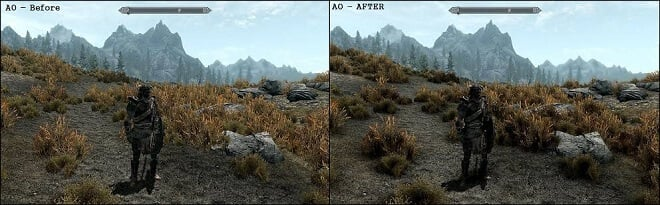

The term post-processing (or postproc for short) is used in the video/film business for quality-improvement image processing (specifically digital image processing) methods used in video playback devices, such as stand-alone DVD-Video players; video playing software; and transcoding software. It is also commonly used in real-time 3D rendering (such as in video games) to add additional effects.
Additionally, post-processing is commonly used in 3D rendering, especially for video games. Instead of rendering 3D objects directly to the display, the scene is first rendered to a buffer in the memory of the video card. Pixel shaders and optionally vertex shaders are then used to apply post-processing filters to the image buffer before displaying it to the screen. Some post-processing effects also require multiple-passes, gamma inputs, vertex manipulation, and depth buffer access. Post-processing allows effects to be used that require awareness of the entire image (since normally each 3D object is rendered in isolation).
The first effect is the Ambient Occlusion, it consists on perfecting and make shadows, holes and surfaces more realistic.
It basically can simulate the properties of a real camera by blurring objects at a distance from the lens. How to use it? Increase blur intensity by decreasing aperture and increasing Focal Length. Decrease the focal length if you want to focus on closer objects and zoom in on further objects.
Set the brightest points of light slightly “blurry”, making the player feels like it’s in paradise! Choose the collor you want to the effect and keep adjusting it while you configure the following steps; Set the Intensity to adjust the brightness level of the dots; Adjust the Threshold to determine how bright the pixels affected by the lightpoint bloom will become (the higher the Threshold the smaller the effect on pixels); Increase the Soft Knee if you want to smoother the Bloom.
this is a well known effect, not only by its game applications, but also because it’s used in movies and pictures, maybe you have already used it sometime in your life. But if you haven’t, just know that the “Vignette” darkens the edge of your screen, so the center will be highlighted, it is usually used on dramatic works or ending scenes, you can find this kind of effect in old movies, like Charlie Chaplin’s ones. If you want a softer effect (very important to games in first person, like Counter Strike): Set the intensity between 0.2 e 0.35; Smoothness to 0.5 (0.5 is a mid-value so it is perfect to a fast-flowing game, but in case you want a noticeable effect you can set it to the maximum value); Set the roundness to 1 so you can make a well-rounded vignette.
it creates light spectrums around the objects, it’s generally used to create an intoxication or poisoning effect (like Katniss Everdeen after being attacked by wasps in Hunger Games) or simply for artistic looking projects; Adjust the intensity to configure the distortion level; Change the color distortion standard by adding a different texture in “Spectral Texture” (there are 4 other standards included in the Post-process package)
Simulates the effect that real world cameras produce when small particles in the film camera gives the image a rudimentary and unprocessed effect, is often used in games like Limbo and many others horror games. The configurations are very intuitive: Determine how visible the effect will be by regulating its intensity; Adjust the size each grain should have in “Size”; To determine the influence of scene lights on the image’s graininess adjust the value of the “Luminance Contribution” (the larger the graininess the camera will look at brighter places and vice versa)